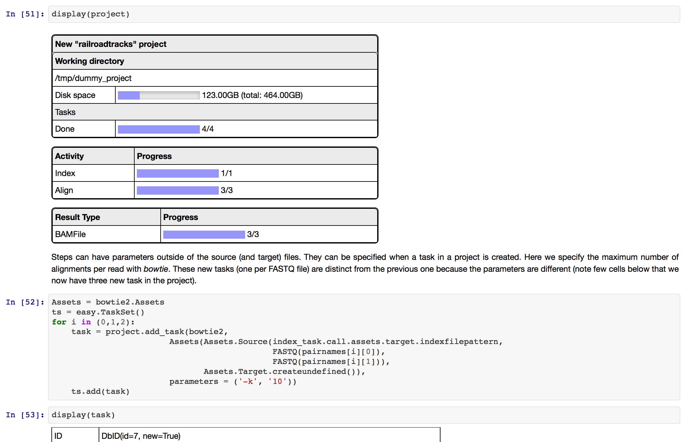

Railroadtracks

railroadtracks is a Python toolkit to handle graphs of dependent tasks such as the ones found in bioinformatics pipelines.
It was created for comparing RNA-Seq pipelines and found its use is other situations, such as writing a flexible system
for the QC of NGS data.
GitHub project Download Railroadtracks Documentation (PDF)
`railroadtracks` is providing the following main features:
- ad hoc creation of pipelines, interactive use
in mind and ipython-specify
display of objects
- separation of the declaration of tasks from their
execution
- simple abstractions to perform parallel computing
allowing computations to be moved easily to different
models for parallel and distributed computing
- a fully-extendable and editable model layer unifying
popular tools in DNA and RNA-sequencing
data processing under one common interface.
- It can be installed as a regular Python package,
for example using `pip install`. A tutorial as
an ipython notebook is avaible as part of the
documentation for the package.

Use in the ipython notebook